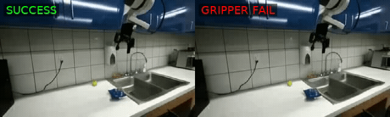
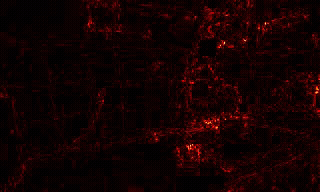
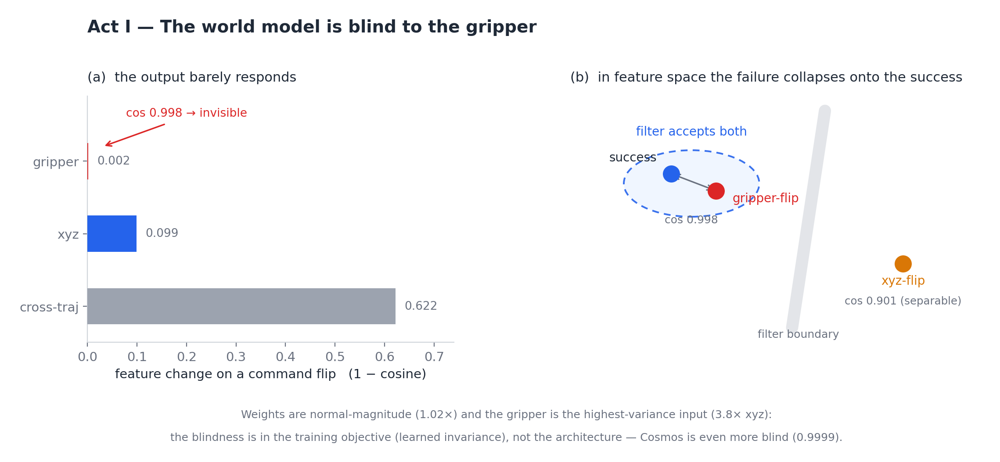
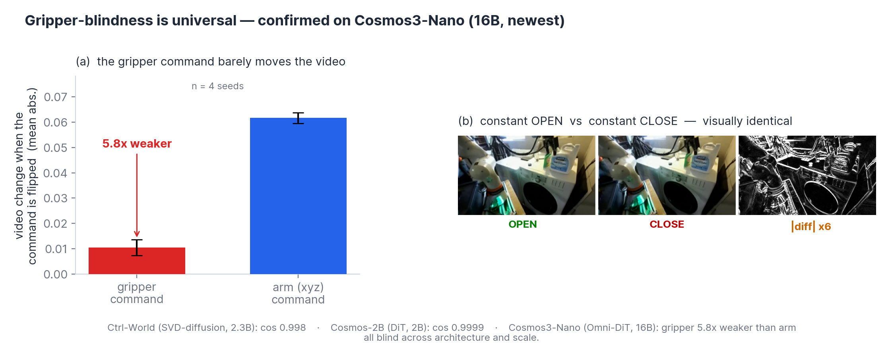
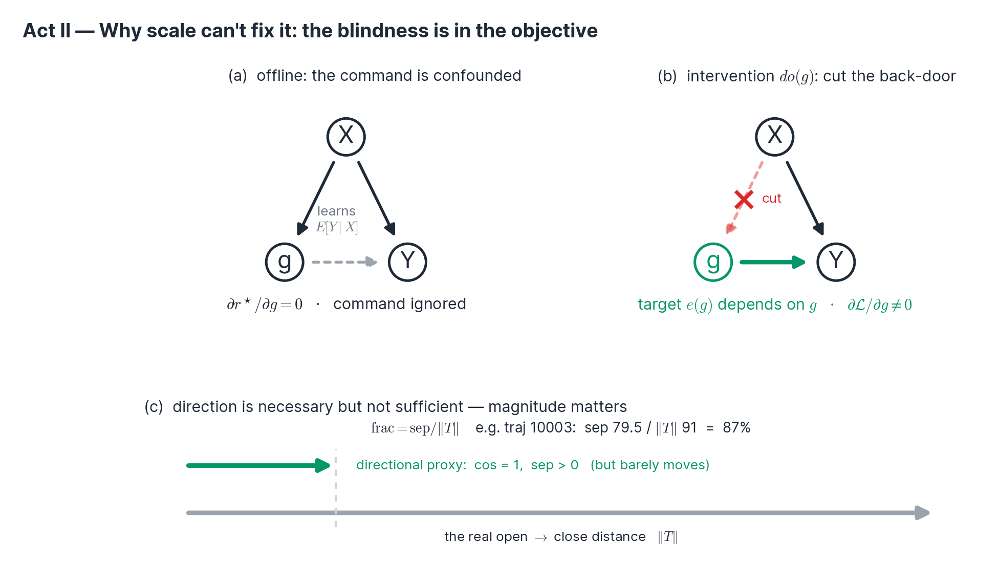
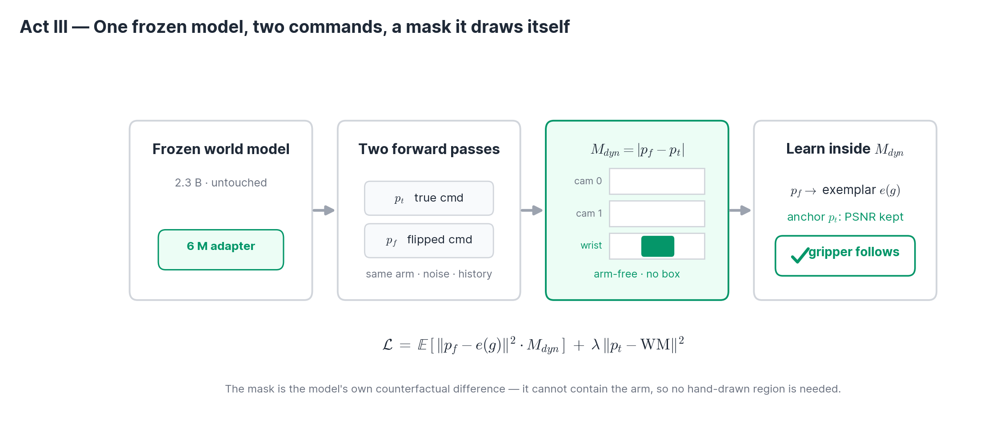

Interventional de-confounding makes a frozen 2.3 B video world model render the robot gripper open / close on command at the pixel level — at preserved video quality, with 0.26% trainable parameters and zero changes to the world model's weights.
Frozen video world models (WMs) are increasingly used as offline simulators and filters for vision–language–action policies. We show that a public 2.3 B-parameter Ctrl-World checkpoint is structurally blind to the gripper: flipping the gripper command from fully-open to fully-closed leaves its predicted video essentially unchanged (feature cosine 0.998). We trace this to a property of the training objective, not the architecture or the data: because the gripper command is predictable from visual context, the reconstruction optimum is independent of the command (\(\partial r^\star/\partial g = 0\)), so more data, capacity, or fine-tuning cannot fix it.
We then make the frozen model controllable. The key is to stop optimizing over the confounded offline distribution and instead supervise with an interventional, command-dependent target \(p(\text{future}\mid X,\operatorname{do}(g))\): the same-trajectory ground-truth latent whose gripper openness matches the commanded value. A self-localizing, arm-free mask — computed directly from the model's own counterfactual difference — confines learning to the gripper on every camera with no hand-drawn region, and an anchor on the true-command render preserves video quality. On 20 held-out trajectories the gripper now follows the command in 19/20 cases, reproducing ~69% of the ground-truth's own open→close motion, at preserved PSNR and with the WM weights untouched. We report an honest scope boundary: control is strong on the wrist camera and remains resolution-limited on distant third-person views.
Gripper blindness is learned invariance from the pixel objective — not weight suppression, not low input variance. We prove it is unfixable by scale.
Interventional de-confounding: a command-dependent target restores \(\partial \mathcal{L}/\partial g \neq 0\). A self-localizing arm-free mask removes the need for any hand-drawn region.
Pixel-level gripper control on a frozen WM at preserved quality — the first demonstration that this blindness can be undone without retraining the world model.
Drive the same scene with a correct trajectory and with one that secretly flips the gripper open at the last moment. The world model's predicted video — and its internal features — are almost identical. The filter built on it accepts both.



We repeat the gripper-flip audit across three action-conditioned world models spanning architectures (SVD-diffusion, DiT, Omni-MoT) and scales (2.3 B → 16 B), including Cosmos3-Nano, a 16 B model released in 2026. Every one ignores the gripper command — confirming the blindness is a property of the training objective, not of any single model or scale.
Ctrl-World / Cosmos-2B: feature-space cosine under a gripper flip. Cosmos3-Nano: pixel-space, gripper vs. arm command (4 seeds). Different probes — same conclusion.

In offline data the gripper command \(g\) is almost a function of the visual context \(X\). So the reconstruction optimum does not depend on the command at all:
The command channel receives zero gradient. This is a property of the data distribution, so it cannot be removed by more data, more capacity, or plain fine-tuning — and indeed four frozen-backbone recipes all stalled. Worse, the natural fix — a directional steering loss \(\;\mathrm{sep}=\langle \Delta f,\hat T\rangle\;\) toward the open→close direction \(\hat T=T/\lVert T\rVert\) — is magnitude-blind: it rewards an infinitesimal, correctly-pointed nudge and is satisfied by moving easy background pixels rather than the hard, few-pixel fingers. A positive sep is necessary but not sufficient for a gripper that visibly closes; the honest metric is the fraction of the real swing reproduced, \(\;\mathrm{frac}=\mathrm{sep}/\lVert T\rVert\).

To inject \(\partial\mathcal{L}/\partial g\neq 0\) we replace the offline target with an interventional one — a target that is genuinely a function of the command. Three ingredients, all on top of a frozen world model:
Supervise the commanded render toward the same-trajectory ground-truth latent \(e(g)\) whose gripper openness matches the command. Because \(e(g)\neq e(g')\), the optimum now depends on \(g\) with the right magnitude — fixing the magnitude-blindness of directional steering.
The intervention changes only the gripper channel, so the model's own counterfactual difference \(\;M_{\mathrm{dyn}}=\mathrm{normalize}\,\lvert p_f-p_t\rvert\;\) is arm-free by construction (arm, text, noise and history are identical between the two commands). It localizes the gripper on every camera with no hand-drawn box.
The true-command render is pinned to the frozen world model everywhere; only the flipped-command render is free to move inside \(M_{\mathrm{dyn}}\). Video quality (measured on the true command) is preserved — PSNR moves by −0.12 dB.

Held-out traj 10046, wrist camera. Each clip shows the scene under the OPEN and the CLOSE command.
More held-out scenes. Same view, two commands: OPEN (left) vs. CLOSE (right) — the gripper fingers visibly spread or close.
20 held-out trajectories, real wrist camera. World model frozen throughout.
| Metric | Frozen WM | + ours (exmask) |
|---|---|---|
| Gripper following (held-out, wrist) | −0.36 | +0.64 |
| Follow rate (trajectories) | — | 19 / 20 |
| Memorization (copies demo gripper?) | +0.55 | −0.19 |
| PSNR change (quality) | — | −0.12 dB |
| Trainable parameters | 0 | 6 M / 2.3 B (0.26%) |
Control is strong on the wrist camera (the gripper's own view) but resolution-limited on distant third-person views. There the gripper occupies only a few pixels of the latent — even the ground truth's own open→close motion is ~8× smaller — and the model follows the command in only 2/20 cases. We believe this is a representation-resolution bottleneck, not a loss-weight one, and report it as the scope boundary of the result rather than hiding it.
Every experiment is tracked as a node in an Obsidian-style DAG vault. Training is a single GPU run on a frozen world model; the adapter is 6 M parameters.
source scripts/_lockin_splits.env # 57 active / 20 held-out / 8 passive export DROID_WRIST_VIEW=2 # real wrist = view 2 python scripts/train_rollout_gated.py \ --clean-roi --lora-encoder --unfreeze-output --output-lr 1e-5 \ --dyn-mask --exemplar-anchor \ # interventional target + arm-free mask --lam-ex 1.0 --lam-div 0.5 --lam-preserve 1.0 \ --steps 1500 --out exmask python scripts/render_wrist_multi.py \ --adapter results/exmask/adapter_s1499_best.pt --lora-encoder --view 2 \ --trajs 10003,10024,10046,10010,10056
Key files: scripts/train_rollout_gated.py (the --dyn-mask arm-free
localizer), scripts/train_rollout_steered.py (openness-matched exemplar),
scripts/render_wrist_multi.py (the magnitude-honest
frac = sep/‖T‖ metric). Full write-up:
docs/exmask_gripper_control.md.
@inproceedings{anonymous2026frozen,
title = {Frozen Video World Models Can Follow Gripper Commands},
author = {Anonymous},
booktitle = {Under review at ICLR},
year = {2026},
note = {Anonymous submission}
}